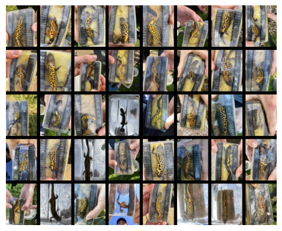
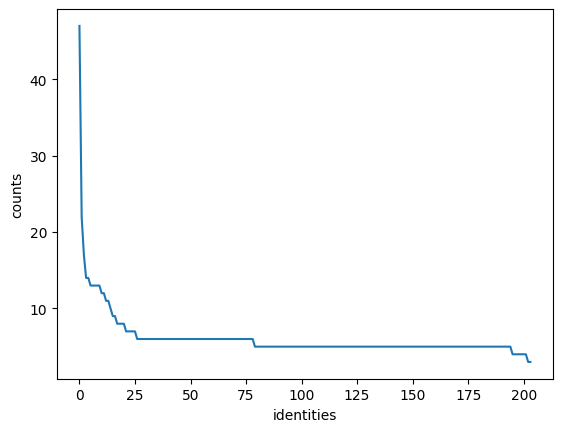

import numpy as np # linear algebra
import pandas as pd # data processing, CSV file I/O (e.g. pd.read_csv)
import os
import shutil
from pathlib import Path
from wildlife_datasets import datasets, analysis
from tqdm import tqdm
import matplotlib.pyplot as plt
from PIL.ExifTags import TAGS
from PIL import Image
import os
import exifread
from pymediainfo import MediaInfoNewt Dataset Preparation
This notebook is used to prepare the newt dataset for training and evaluation.
# Set pandas display options to show all columns and wide output
pd.set_option('display.max_columns', None)
pd.set_option('display.width', None)
pd.set_option('display.max_colwidth', None)download_kaggle_dataset
download_kaggle_dataset (dataset_name, download_path)
download_kaggle_dataset("mshahoyi/bar-hill-surveys", "./data/barhill-unprocessed")Dataset already exists at ./data/barhill-unprocessed'./data/barhill-unprocessed'data_root = Path("./data/barhill-unprocessed")/'Bar Hill Surveys 2024'
walk = list(os.walk(data_root))
walk[:4][('data/barhill-unprocessed/Bar Hill Surveys 2024',
['Survey 5 06_06_24',
'Survey 7 12_06_24',
'Survey 2 10_05_24',
'Survey 1 09_05_24',
'Survey 6 07_06_24',
'Survey 3 16_05_24',
'Survey 8 13_06_24',
'Survey 4 17_05_24'],
['Bar Hill GCN Survey Results 2024.xlsx',
'ARU Research poster A1 (003) Ecoacoustics researching at Cambridge crematorium_edit (002).png',
'GCN Surveys at Cambridge Crematorium 2024.docx']),
('data/barhill-unprocessed/Bar Hill Surveys 2024/Survey 5 06_06_24',
['Pond 4', 'Pond 3', 'Pond 2'],
[]),
('data/barhill-unprocessed/Bar Hill Surveys 2024/Survey 5 06_06_24/Pond 4',
['GCN1-P4-S5'],
[]),
('data/barhill-unprocessed/Bar Hill Surveys 2024/Survey 5 06_06_24/Pond 4/GCN1-P4-S5',
[],
['IMG_3558.MOV',
'IMG_3551.MOV',
'IMG_3553.MOV',
'IMG_3555.JPEG',
'IMG_3556.JPEG',
'IMG_3556.MOV',
'IMG_3554.JPEG',
'IMG_3557.JPEG',
'IMG_3552.MOV',
'IMG_3551.JPEG',
'IMG_3557.MOV',
'IMG_3552.JPEG',
'IMG_3555.MOV',
'IMG_3553.JPEG',
'IMG_3554.MOV',
'IMG_3558.JPEG'])]gcns = [x for x in walk if 'gcn' in os.path.basename(x[0]).lower()]
gcns[:2][('data/barhill-unprocessed/Bar Hill Surveys 2024/Survey 5 06_06_24/Pond 4/GCN1-P4-S5',
[],
['IMG_3558.MOV',
'IMG_3551.MOV',
'IMG_3553.MOV',
'IMG_3555.JPEG',
'IMG_3556.JPEG',
'IMG_3556.MOV',
'IMG_3554.JPEG',
'IMG_3557.JPEG',
'IMG_3552.MOV',
'IMG_3551.JPEG',
'IMG_3557.MOV',
'IMG_3552.JPEG',
'IMG_3555.MOV',
'IMG_3553.JPEG',
'IMG_3554.MOV',
'IMG_3558.JPEG']),
('data/barhill-unprocessed/Bar Hill Surveys 2024/Survey 5 06_06_24/Pond 3/GCN2-P3-S5',
[],
['IMG_3564.JPEG',
'IMG_3565.MOV',
'IMG_3565.JPEG',
'IMG_3563.MOV',
'IMG_3561.MOV',
'IMG_3566.JPEG',
'IMG_3564.MOV',
'IMG_3562.MOV',
'IMG_3561.JPEG',
'IMG_3563.JPEG',
'IMG_3566.MOV',
'IMG_3562.JPEG'])]data = [(os.path.basename(root), list(map(lambda f: os.path.join(root, f), files))) for root, _, files in gcns]
dict(data[:2]){'GCN1-P4-S5': ['data/barhill-unprocessed/Bar Hill Surveys 2024/Survey 5 06_06_24/Pond 4/GCN1-P4-S5/IMG_3558.MOV',
'data/barhill-unprocessed/Bar Hill Surveys 2024/Survey 5 06_06_24/Pond 4/GCN1-P4-S5/IMG_3551.MOV',
'data/barhill-unprocessed/Bar Hill Surveys 2024/Survey 5 06_06_24/Pond 4/GCN1-P4-S5/IMG_3553.MOV',
'data/barhill-unprocessed/Bar Hill Surveys 2024/Survey 5 06_06_24/Pond 4/GCN1-P4-S5/IMG_3555.JPEG',
'data/barhill-unprocessed/Bar Hill Surveys 2024/Survey 5 06_06_24/Pond 4/GCN1-P4-S5/IMG_3556.JPEG',
'data/barhill-unprocessed/Bar Hill Surveys 2024/Survey 5 06_06_24/Pond 4/GCN1-P4-S5/IMG_3556.MOV',
'data/barhill-unprocessed/Bar Hill Surveys 2024/Survey 5 06_06_24/Pond 4/GCN1-P4-S5/IMG_3554.JPEG',
'data/barhill-unprocessed/Bar Hill Surveys 2024/Survey 5 06_06_24/Pond 4/GCN1-P4-S5/IMG_3557.JPEG',
'data/barhill-unprocessed/Bar Hill Surveys 2024/Survey 5 06_06_24/Pond 4/GCN1-P4-S5/IMG_3552.MOV',
'data/barhill-unprocessed/Bar Hill Surveys 2024/Survey 5 06_06_24/Pond 4/GCN1-P4-S5/IMG_3551.JPEG',
'data/barhill-unprocessed/Bar Hill Surveys 2024/Survey 5 06_06_24/Pond 4/GCN1-P4-S5/IMG_3557.MOV',
'data/barhill-unprocessed/Bar Hill Surveys 2024/Survey 5 06_06_24/Pond 4/GCN1-P4-S5/IMG_3552.JPEG',
'data/barhill-unprocessed/Bar Hill Surveys 2024/Survey 5 06_06_24/Pond 4/GCN1-P4-S5/IMG_3555.MOV',
'data/barhill-unprocessed/Bar Hill Surveys 2024/Survey 5 06_06_24/Pond 4/GCN1-P4-S5/IMG_3553.JPEG',
'data/barhill-unprocessed/Bar Hill Surveys 2024/Survey 5 06_06_24/Pond 4/GCN1-P4-S5/IMG_3554.MOV',
'data/barhill-unprocessed/Bar Hill Surveys 2024/Survey 5 06_06_24/Pond 4/GCN1-P4-S5/IMG_3558.JPEG'],
'GCN2-P3-S5': ['data/barhill-unprocessed/Bar Hill Surveys 2024/Survey 5 06_06_24/Pond 3/GCN2-P3-S5/IMG_3564.JPEG',
'data/barhill-unprocessed/Bar Hill Surveys 2024/Survey 5 06_06_24/Pond 3/GCN2-P3-S5/IMG_3565.MOV',
'data/barhill-unprocessed/Bar Hill Surveys 2024/Survey 5 06_06_24/Pond 3/GCN2-P3-S5/IMG_3565.JPEG',
'data/barhill-unprocessed/Bar Hill Surveys 2024/Survey 5 06_06_24/Pond 3/GCN2-P3-S5/IMG_3563.MOV',
'data/barhill-unprocessed/Bar Hill Surveys 2024/Survey 5 06_06_24/Pond 3/GCN2-P3-S5/IMG_3561.MOV',
'data/barhill-unprocessed/Bar Hill Surveys 2024/Survey 5 06_06_24/Pond 3/GCN2-P3-S5/IMG_3566.JPEG',
'data/barhill-unprocessed/Bar Hill Surveys 2024/Survey 5 06_06_24/Pond 3/GCN2-P3-S5/IMG_3564.MOV',
'data/barhill-unprocessed/Bar Hill Surveys 2024/Survey 5 06_06_24/Pond 3/GCN2-P3-S5/IMG_3562.MOV',
'data/barhill-unprocessed/Bar Hill Surveys 2024/Survey 5 06_06_24/Pond 3/GCN2-P3-S5/IMG_3561.JPEG',
'data/barhill-unprocessed/Bar Hill Surveys 2024/Survey 5 06_06_24/Pond 3/GCN2-P3-S5/IMG_3563.JPEG',
'data/barhill-unprocessed/Bar Hill Surveys 2024/Survey 5 06_06_24/Pond 3/GCN2-P3-S5/IMG_3566.MOV',
'data/barhill-unprocessed/Bar Hill Surveys 2024/Survey 5 06_06_24/Pond 3/GCN2-P3-S5/IMG_3562.JPEG']}metadata = pd.DataFrame(data).explode(1)
metadata.columns = ["reference_id", "file_path"]
metadata.shape(2504, 2)metadata.head()| identity | file_path | |
|---|---|---|
| 0 | GCN1-P4-S5 | data/barhill-unprocessed/Bar Hill Surveys 2024... |
| 0 | GCN1-P4-S5 | data/barhill-unprocessed/Bar Hill Surveys 2024... |
| 0 | GCN1-P4-S5 | data/barhill-unprocessed/Bar Hill Surveys 2024... |
| 0 | GCN1-P4-S5 | data/barhill-unprocessed/Bar Hill Surveys 2024... |
| 0 | GCN1-P4-S5 | data/barhill-unprocessed/Bar Hill Surveys 2024... |
metadata.info()<class 'pandas.core.frame.DataFrame'>
Index: 2504 entries, 0 to 206
Data columns (total 2 columns):
# Column Non-Null Count Dtype
--- ------ -------------- -----
0 identity 2504 non-null object
1 file_path 2504 non-null object
dtypes: object(2)
memory usage: 58.7+ KBmetadata['file_name'] = metadata['file_path'].apply(lambda x: os.path.basename(x))
metadata['is_video'] = metadata['file_name'].apply(lambda x: 'mov' in x.lower())
metadata.head()| identity | file_path | file_name | is_video | |
|---|---|---|---|---|
| 0 | GCN1-P4-S5 | data/barhill-unprocessed/Bar Hill Surveys 2024... | IMG_3558.MOV | True |
| 0 | GCN1-P4-S5 | data/barhill-unprocessed/Bar Hill Surveys 2024... | IMG_3551.MOV | True |
| 0 | GCN1-P4-S5 | data/barhill-unprocessed/Bar Hill Surveys 2024... | IMG_3553.MOV | True |
| 0 | GCN1-P4-S5 | data/barhill-unprocessed/Bar Hill Surveys 2024... | IMG_3555.JPEG | False |
| 0 | GCN1-P4-S5 | data/barhill-unprocessed/Bar Hill Surveys 2024... | IMG_3556.JPEG | False |
mapper = {reference_id: i+1 for i, reference_id in enumerate(metadata.reference_id.unique())}
metadata['identity'] = metadata.reference_id.map(mapper)
metadataoutput_dir = Path("./data/gcns-processed")
shutil.rmtree(output_dir, ignore_errors=True)
Path(output_dir).mkdir(exist_ok=True)class UnprocessedNewtsDataset(datasets.WildlifeDataset):
def create_catalogue(self) -> pd.DataFrame:
return metadata[~metadata.is_video].rename(columns={"file_name": "image_name", "file_path": "path"})dataset = UnprocessedNewtsDataset('.')
plt.figure(figsize=(7, 7))
dataset.plot_grid()
plt.savefig(output_dir/'grid.png')

Split the dataset
plt.figure(figsize=(3.5, 3))
plt.title("Number of images per identity")
analysis.display_statistics(dataset.df)
plt.savefig(output_dir/'distribution.png')Number of identitites 204
Number of all animals 1252
Number of animals with one image 0
Number of unidentified animals 0
n_files = len(metadata)
n_images = len(metadata[~metadata.is_video])
n_videos = len(metadata[metadata.is_video])
n_identities = len(metadata.identity.unique())
stats = {
"n_files": n_files,
"n_images": n_images,
"n_videos": n_videos,
"n_identities": n_identities
}
pd.DataFrame(stats, index=[0]).to_csv(output_dir/'statistics.csv', index=False)
statsSplit: time-unaware disjoint-set
Samples: train/test/unassigned/total = 625/627/0/1252
Classes: train/test/unassigned/total = 110/94/0/204
Samples: train only/test only = 625/627
Classes: train only/test only/joint = 110/94/0
Fraction of train set = 49.92%
Fraction of test set only = 50.08%
Split: time-unaware disjoint-set
Samples: train/test/unassigned/total = 312/315/0/627
Classes: train/test/unassigned/total = 50/44/0/94
Samples: train only/test only = 312/315
Classes: train only/test only/joint = 50/44/0
Fraction of train set = 49.76%
Fraction of test set only = 50.24%
Train: 625, Test: 312, Validation: 315metadata_new = metadata.copy().reset_index(drop=True)
for i, row in tqdm(metadata_new.iterrows()):
new_path = Path('newts')/str(row.identity)/row.file_name
Path(output_dir/new_path).parent.mkdir(parents=True, exist_ok=True)
shutil.copy(row.file_path, output_dir/new_path)
metadata_new.loc[i, 'file_path'] = new_path| identity | path | image_name | is_video | |
|---|---|---|---|---|
| 0 | GCN1-P1-S2 | data/barhill-unprocessed/Bar Hill Surveys 2024... | IMG_2312.JPEG | False |
| 1 | GCN1-P1-S2 | data/barhill-unprocessed/Bar Hill Surveys 2024... | IMG_2310.JPEG | False |
| 2 | GCN1-P1-S2 | data/barhill-unprocessed/Bar Hill Surveys 2024... | IMG_2309.JPEG | False |
| 3 | GCN1-P1-S2 | data/barhill-unprocessed/Bar Hill Surveys 2024... | IMG_2311.JPEG | False |
| 4 | GCN1-P1-S2 | data/barhill-unprocessed/Bar Hill Surveys 2024... | IMG_2313.JPEG | False |
Extract the images time of capture
def get_image_creation_date(image_path):
with open(image_path, 'rb') as f:
tags = exifread.process_file(f, stop_tag="EXIF DateTimeOriginal")
date_tag = tags.get("EXIF DateTimeOriginal")
if date_tag:
return pd.to_datetime(str(date_tag), format='%Y:%m:%d %H:%M:%S', utc=True)
return None
def get_video_creation_date(video_path):
media_info = MediaInfo.parse(video_path)
for track in media_info.tracks:
if track.track_type == "General":
date = (
track.tagged_date or
track.recorded_date or
track.encoded_date
)
if date:
return pd.to_datetime(date).floor('s')
return None
def get_creation_date(row):
file_path = os.path.join(output_dir, row.file_path)
is_video = row.is_video
if is_video: return get_video_creation_date(file_path)
return get_image_creation_date(file_path)metadata_new['creation_date'] = pd.NA
for i, row in tqdm(metadata_new.iterrows(), total=len(metadata_new)):
creation_date = get_creation_date(row)
metadata_new.at[i, 'creation_date'] = creation_datemetadata_new2503it [00:06, 380.40it/s]| identity | file_path | file_name | is_video | split | |
|---|---|---|---|---|---|
| 0 | GCN1-P4-S5 | test/GCN1-P4-S5/IMG_3558.JPEG | IMG_3558.MOV | True | test |
| 0 | GCN1-P4-S5 | test/GCN1-P4-S5/IMG_3558.JPEG | IMG_3551.MOV | True | test |
| 0 | GCN1-P4-S5 | test/GCN1-P4-S5/IMG_3558.JPEG | IMG_3553.MOV | True | test |
| 0 | GCN1-P4-S5 | test/GCN1-P4-S5/IMG_3558.JPEG | IMG_3555.JPEG | False | test |
| 0 | GCN1-P4-S5 | test/GCN1-P4-S5/IMG_3558.JPEG | IMG_3556.JPEG | False | test |
metadata_new.to_csv(output_dir/'metadata.csv', index=False)
metadata_newUpload to Kaggle
upload_to_kaggle
upload_to_kaggle (user_id, title, id, licenses, keywords, dataset_dir)
upload_to_kaggle(user_id="mshahoyi",
title="Barhill Great Crested Newts",
id="barhill-newts-all",
licenses=[{"name": "CC0-1.0"}],
keywords=["biology", "computer-vision", "animals", "great crested newts"],
dataset_dir="./data/gcns-processed")import nbdev; nbdev.nbdev_export()